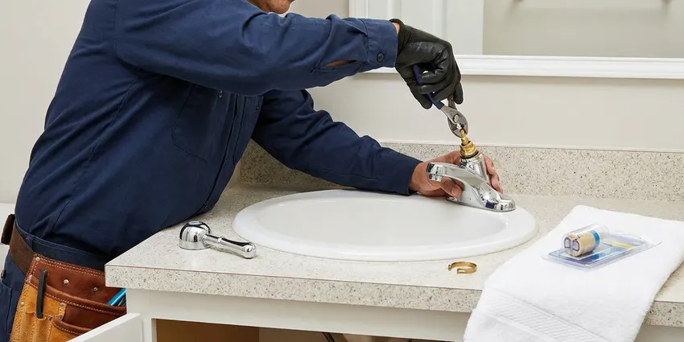

Bathroom Plumbing in Odessa, TX
Facing a plumbing issue in your Odessa bathroom? DFJ Plumbing provides reliable repairs and installations across Texas.
- Fast Local Service
- Expert Plumbers
- Fair Pricing
- Guaranteed Work
Your Trusted Bathroom Plumbing Experts in Odessa, TX.
We are ready to tackle any bathroom plumbing challenge, big or small, with professionalism.
Your Go-To for Bathroom Plumbing in Odessa, TX
When you need dependable bathroom plumbing in Odessa, TX, DFJ Plumbing is the company to call. We ensure all repairs and installations meet local codes, providing lasting solutions for your home.
Our expertise includes:
- Toilet repair, installation, and replacement
- Faucet and shower fixture services
- Sink and drain solutions

Additional Bathroom Plumbing Services in Odessa, TX
From toilets to showers, our bathroom plumbing team in Odessa, TX repairs, installs, and replaces every fixture with clean, code-compliant work.




Faucet Repair in Odessa


Customers
Why Choose DFJ Plumbing for Bathroom Plumbing in Odessa, TX?
Choosing DFJ Plumbing means you are getting licensed and insured plumbers who understand Odessa's specific plumbing challenges. We pride ourselves on clear communication and transparent pricing for every job.
- Local Expertise, We understand the unique plumbing needs of homes in Odessa, including issues related to hard water and expansive clay soils.
- Skilled Technicians, Our plumbers are highly trained and experienced in all aspects of bathroom plumbing, from antique fixtures to modern smart home systems.
- Quality Parts, We use only reputable brands and high-quality materials for all repairs and installations, ensuring durability and performance.
Citywide Coverage
DFJ Plumbing proudly serves every neighborhood and community within Odessa and its surrounding areas. Whether you are in the heart of downtown or on the outskirts, our team is ready to provide prompt bathroom plumbing service.
Experienced Team
Our team of plumbers brings years of specialized experience to every bathroom plumbing job. They are continuously trained on the latest techniques and fixture technologies to provide the best service possible.
Safety-First Approach
Safety is paramount in all our bathroom plumbing work. We adhere strictly to all Texas plumbing codes and safety regulations, protecting your home and family during every service.
Trusted Certified Odessa Plumbing Services Professionals
At DFJ Plumbing, we take pride in providing certified plumbing services throughout Odessa, TX. Backed by leading industry credentials, our experienced plumbers combine technical skill with genuine customer care. Whether it is repair, installation, or maintenance, we follow strict safety and quality standards to deliver long-lasting results you can trust.
Call Us Now PHCC Plumbing Contractor Recognition
PHCC Plumbing Contractor Recognition Better Business Bureau (BBB) Accreditation
Better Business Bureau (BBB) Accreditation Angi Certified Pro
Angi Certified Pro ISO 9001 Quality Management Certification
ISO 9001 Quality Management CertificationDependable Bathroom Plumbing Services in Odessa, TX
Toilet Repair and Installation in Odessa
A running toilet can waste hundreds of gallons of water per month, driving up your utility bills. DFJ Plumbing provides expert toilet repair for common issues like faulty flappers, fill valves, and leaks at the base. We also handle new toilet installations, whether you are upgrading to a high-efficiency model or replacing an old, inefficient unit. Our team ensures proper sealing and stable mounting for long-lasting performance in Odessa homes.

Faucet Repair and Replacement in Odessa, TX
Dripping faucets are more than just annoying, they can lead to significant water waste and contribute to mildew growth. Our plumbers specialize in repairing all types of bathroom faucets, including compression, cartridge, ceramic disc, and ball faucets. If a repair is not cost-effective, we offer professional faucet replacement services, helping you choose and install a new fixture that complements your bathroom style and budget in Odessa, TX. We work with brands like Moen, Delta, and Kohler.
Shower Repair and Installation in Odessa
From low water pressure to constantly dripping showerheads, shower plumbing problems can be frustrating. DFJ Plumbing offers comprehensive shower repair services, addressing issues with cartridges, diverters, and drain clogs. When it is time for an upgrade, we provide expert shower installation for all types, including standard showers, walk-ins, and spa-like systems, ensuring proper water flow and drainage in your Odessa home. We also handle bathtub faucet replacements.
Sink Repair and Replacement in Odessa, TX
A clogged or leaking bathroom sink can disrupt your daily routine. Our team is skilled in diagnosing and repairing all sink-related plumbing issues, including P-trap leaks, drain clogs from hair and soap scum, and slow drainage. We can also replace old or damaged sinks, ensuring proper connection to your existing plumbing system. For homes in Odessa, TX, we often see issues related to hard water buildup in sink aerators and drains, which we expertly address.
Urinal Installation and Commercial Bathroom Plumbing in Odessa
Beyond residential services, DFJ Plumbing also provides commercial bathroom plumbing solutions for businesses in Odessa. This includes the specialized installation of urinals, ensuring proper water supply and drainage connections according to commercial plumbing codes. We understand the unique demands of high-traffic commercial restrooms and provide durable, code-compliant installations and repairs to minimize downtime for your business.
Bathtub Faucet Replacement in Odessa, TX
Over time, bathtub faucets can wear out, leak, or become outdated. DFJ Plumbing offers professional bathtub faucet replacement services to upgrade your bathroom's look and functionality. We can install various styles, from single-handle to wall-mounted designs, ensuring a watertight seal and proper operation. Our plumbers in Odessa, TX are familiar with common Texas water conditions that can accelerate faucet wear and recommend durable replacements.
Emergency Bathroom Plumbing in Odessa
Plumbing emergencies rarely happen at convenient times. For unexpected issues like a burst pipe behind your shower wall or a severely clogged toilet that is overflowing, DFJ Plumbing offers emergency bathroom plumbing services in Odessa. Our rapid response team is equipped to quickly diagnose and resolve critical problems, preventing further water damage and restoring functionality to your bathroom with minimal disruption.

Preventative Maintenance for Bathroom Plumbing in Odessa, TX
Preventative maintenance can significantly extend the life of your bathroom fixtures and prevent costly repairs. DFJ Plumbing offers routine inspections for homes in Odessa, TX to check for minor leaks, inspect seals, and clear developing clogs in drains. This proactive approach helps identify potential problems early, saving you money and inconvenience down the road, especially with the mineral buildup common in Texas water.
Expert Bathroom Plumbing Near Me in Odessa, TX
When you search for "bathroom plumbing near me" in Odessa, TX, DFJ Plumbing is your reliable local choice. Our strategically located teams ensure a fast response time to any plumbing call, minimizing wait times for our customers.
We are deeply familiar with the plumbing infrastructure and common issues found in homes across Odessa. This local knowledge allows us to provide targeted and efficient bathroom plumbing solutions tailored to your specific needs.
DFJ Plumbing at a Glance
- Fully licensed plumbing team covering Odessa, TX
- Same-day appointments and 24/7 emergency response
- Upfront, flat-rate pricing before work begins
- 4.9-star rated by 812+ Texas customers
Odessa Map
Odessa Information
- Population
- 115,743
- Area codes
- 432/325/915
- Service area
- Odessa and communities within 40 miles
- Nearby
- Midland, San Angelo, Lubbock, Abilene
Effective bathroom plumbing is crucial for homes in Odessa, TX, given the potential for mineral deposits from hard water to corrode fixtures and the need for robust drainage systems to handle high usage.
Expert Services
Trust our professionals for reliable DFJ Plumbing solutions in Odessa, TX.
Our Specialized Plumbing Services in Odessa, TX
At DFJ Plumbing, we provide a complete range of plumbing services across Odessa, TX. From leak detection to full system installations, our team ensures fast, precise, and affordable service for both residential and commercial properties. Explore our core services below:


How Our Bathroom Plumbing Process Works in Odessa, TX
Our streamlined process ensures efficient and effective resolution of your bathroom plumbing needs.
Request a Quote
Call (737) 405-5978 or fill out our online form to schedule an appointment. We will discuss your bathroom plumbing needs and set up a convenient time for a service visit.
On-Site Assessment
Our skilled plumber arrives on time to your Odessa home, thoroughly inspects the issue, and provides a detailed diagnosis. We explain the problem and present clear, upfront pricing options.
Expert Service
Upon your approval, our plumber performs the necessary repairs or installations using quality parts and proven techniques. We work efficiently to restore your bathroom plumbing to optimal condition.
Frequently Asked Questions About Bathroom Plumbing in Odessa
The cost of bathroom plumbing repair in Odessa can vary widely depending on the issue. A simple faucet repair might be $150-$300, while a complex toilet replacement could range from $400-$800, including the new fixture. We provide a detailed estimate after diagnosing the problem.
Replacing a standard shower head is often a straightforward DIY task. However, if you are experiencing low water pressure, leaks from the wall, or plan to install a complex multi-function shower system, it is best to call a professional to ensure proper installation and prevent leaks.
A standard bathroom faucet installation typically takes 1 to 3 hours, assuming no complications. Factors like existing plumbing condition, fixture type, and accessibility can affect the total time. Our plumbers work efficiently to minimize disruption.
Common signs include a running toilet, weak flush, water pooling around the base, or a gurgling sound from other drains when flushed. These often indicate issues with the fill valve, flapper, or a partial clog in the drain line.
For most Odessa homes, an annual or bi-annual professional drain cleaning is sufficient to prevent major clogs, especially if you have long hair or use a lot of soap. Hard water in Texas can also contribute to mineral buildup that narrows pipes over time.
We service and install all major brands including Kohler, Moen, Delta, American Standard, Toto, Pfister, and Grohe. Our plumbers are familiar with the specific parts and repair techniques for each manufacturer, ensuring quality service.
Low water pressure can stem from several issues, including mineral buildup in aerators or showerheads, a failing pressure regulator, leaks in the water line, or issues with your water heater. Our plumbers can diagnose the exact cause.
Yes, DFJ Plumbing stands behind our work. We offer a warranty on all parts and labor for our bathroom plumbing services. Specific warranty details will be provided at the time of service, ensuring your peace of mind.
What People Are Saying About Our Plumbing Experts?

Emily R.
I called DFJ Plumbing for plumbing repair, and the technician was fast, polite, and thorough. They explained the problem clearly and fixed it the same day. I will definitely hire them again. Highly recommended!
Plumbing Repair · Amarillo, TX
Patricia H.
We had a slab leak that two other companies could not find. DFJ Plumbing located it in under an hour, explained our options, and the price matched the quote to the dollar.
Slab Leak Repair · El Paso, TX
James P.
Our commercial plumbing system had a leak under the sink, and DFJ Plumbing handled it professionally. The plumbers arrived quickly and restored everything without disruption to our customers.
Commercial Plumbing · El Paso, TXRobert G.
The trenchless sewer replacement saved our front yard. They walked us through the camera inspection footage first so we knew exactly what we were paying for.
Sewer Line Replacement · El Paso, TX
Daniel K.
A pipe burst at 11 pm and they actually answered. The plumber showed up within the hour, shut everything down, and had us back to normal the next morning. Could not ask for more.
Emergency Plumbing · San Angelo, TX
Laura S.
I scheduled a water heater replacement, and the team made the process smooth and affordable. The new unit works perfectly, and they cleaned up after completing the job.
Water Heater Replacement · Lubbock, TX